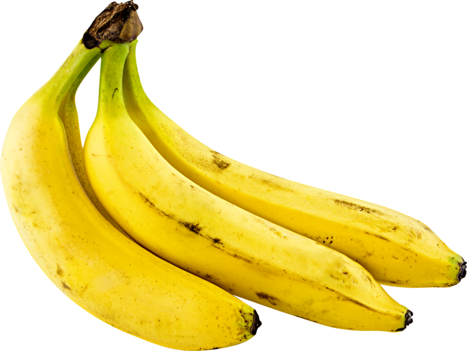
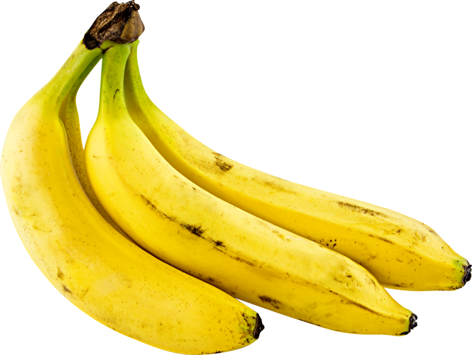

What is a Banana?


Bananas were originally found in South East Asia, mainly in India. They were brought west by Arab conquerors in 327 B.C. and moved from Asia Minor to Africa and finally carried to the New World by the first explorers andmissionaries to the Caribbean. The mass production of bananas started in 1834 and really started exploding in the late 1880’s. Before the 1870’s most of the land that bananas were grown on in the Caribbean had been previously used to grow sugar. After this time low marsh land started to be drained along with forests that were cleared in Central America for monocrops (which is growing one crop to increase productivity). In the early years of Central American banana trade the head of United Fruit had a marriage for political gain to the daughter of the Costa Rican President. This allowed his fruit company United Fruit to start acquiring the other fruit companies in the country. In the 1950’s when freely elected government of Guatemala threatened United Fruits control, United Fruit convinced the CIA that an overthrow was in order. The CIA placed a right-wing dictator loyal to United Fruit in power securing United Fruit’sposition in Guatemala.
The first notable disease to strike bananas was a mold called Fusarium, it struck the roots of the Gros Michel which is avariety of bananas. Fusarium was also known as Panama Disease which was carried in the soil. In the 1920’s a second disease struck banana crops called Sigatosa, which is an airborne fungus. In the mind 1920’s United Fruit pathologists found that they could spray the plants with a “Bordeaux mixture” which is a pesticide, and it helped control the Sigatosa. The strategy to control Fusarium was to move banana plantations every ten years or so. Then researchers developed a banana that was immune to Fusarium, the Giant Cavendish, which is the variety that has come to dominate modern worldwide consumption, appeared in the 1950’s.